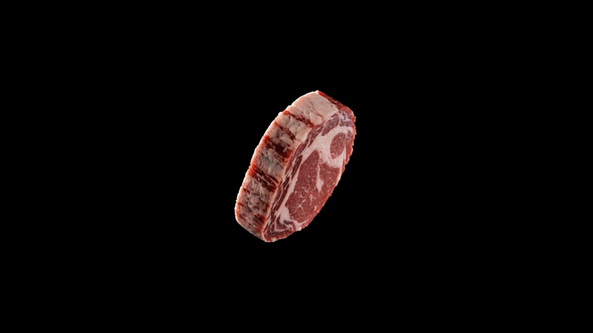
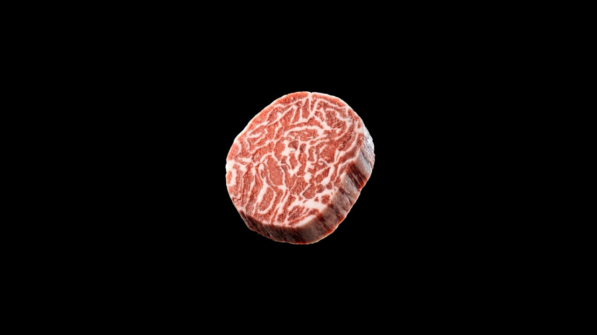
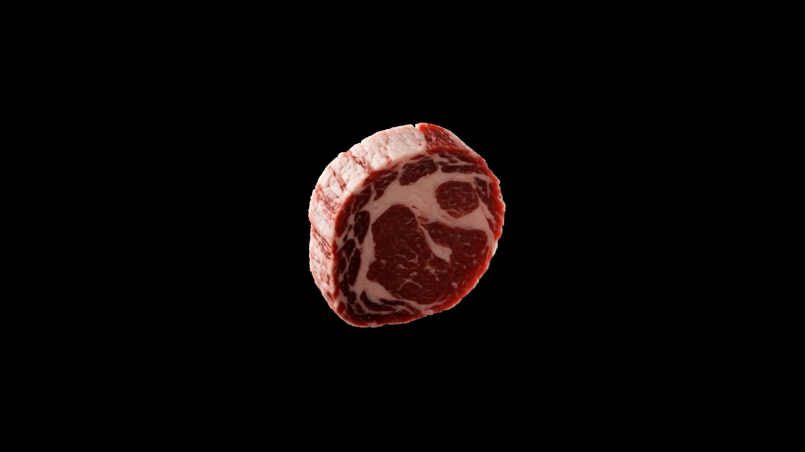

OUR FOCUS
결이 살아 있는 형태
MARVEL MARBLE은 고기의 결과 마블링을 표현하는 덩어리형 대체육으로 소개되고 있습니다.
오렌지카우는 식물성 원료와 바이오 기술을 바탕으로, 고기처럼 결이 살아 있는 대체육 MARVEL MARBLE을 연구·개발합니다.
CES 2027 Innovation Awards · Food Tech Honoree ↗
오렌지카우는 식물성 대체육을 만드는 창업기업입니다. 잘게 빚은 모양을 넘어, 고기 결을 닮은 덩어리형 제품과 다양한 식품 개발 가능성을 연구합니다. 제품별 구성과 이용 가능 여부는 유형에 따라 다르므로 문의로 확인해 주세요.
MARVEL MARBLE은 고기의 결과 마블링을 표현하는 덩어리형 대체육으로 소개되고 있습니다.
공개된 기술 설명과 연구 기반을 바탕으로, 새로운 식감과 제품 형태를 탐구합니다.
식품 제조사, 유통사, 외식업체와의 시식·공동개발·공급 관련 문의를 환영합니다.
오렌지카우는 서로 다른 세 가지 제품 유형을 소개합니다. 동물성 성분 포함 여부가 다르므로, 식단·알레르기 등 중요한 조건은 제품별 원재료를 문의해 확인해 주세요. 판매·시식 가능 여부도 별도 확인이 필요합니다.
식물 유래 단백질을 바탕으로 한 유형. 실제 원재료와 알레르기 정보는 제품별로 확인해 주세요.
식물성 원료에 일반 육류 단백질을 결합하는 유형입니다. 순수 식물성 제품과 구분해 안내합니다.
식물성 원료에 배양한 동물세포를 결합하는 유형입니다. 순수 식물성 제품이 아닙니다.


※ 이미지는 오렌지카우 공식 Products 페이지에 공개된 브랜드 이미지입니다. 공식 첫 화면은 제품을 “Launching Soon”으로 표시하고 있어, 실제 판매·시식 제공 여부는 문의로 확인해 주세요.
※ 위 유형은 회사 공식 제품 안내에 따른 구분입니다. 모든 유형의 제품 판매, 시식 제공, 허가·인증 상태를 이 페이지가 보증하지 않습니다. 구체 정보는 오렌지카우에 문의해 주세요.
기술의 강점은 정확한 조건과 근거를 함께 보여줄 때 신뢰가 됩니다. 오렌지카우는 연구 기반의 제품 개발을 이어가고 있으며, 공개된 외부 수상 정보도 확인할 수 있습니다.
회사는 바이오미메틱 근섬유 구조를 활용해 고기의 결을 표현하는 기술을 소개합니다. 기술의 세부 내용과 적용 단계는 공식 기술 안내에서 확인해 주세요.
기술 소개 보기 ↗MARVEL MARBLE은 CES Innovation Awards 공식 페이지에 2027 Food Tech Honoree로 소개되어 있습니다. 수상은 제품 판매 허가나 독립적인 성능 검증을 의미하지 않습니다.
CES 공식 페이지 확인 ↗제품 유형, 현재 단계, 협업 아이디어를 알려주시면 담당자에게 연결할 수 있습니다.